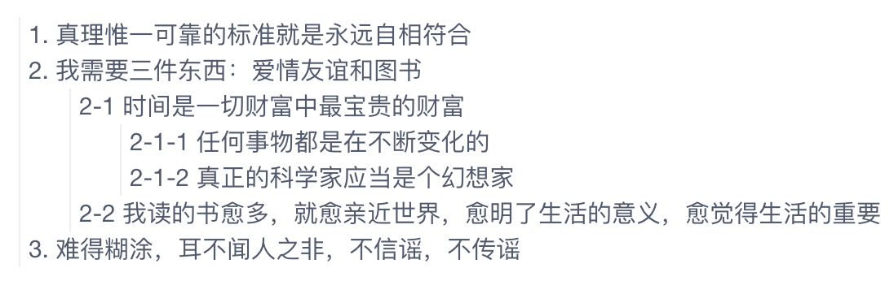

层级结构，也即树结构，是很常见的，例如部门的组织结构，书的章节目录，论坛里帖子的回复等等，可以使用递归的方式遍历树结构的数据，Vue 的组件也能够使用递归的方式展示层级结构的数据，例如下图中所示的回复:

使用 Vue 的递归组件实现组件 Reply 来完成上图的效果。
Reply.vue
树的递归遍历很简单:
1
2
3
4
5
6
7
8
9
10
| function recursive(node) {
console.log(node.name);
if (node.children && node.children.length > 0) {
for (let child of node.children) {
recursive(child);
}
}
}
|
Vue 的递归组件结构也和上面的代码差不多，不过需要注意以下几点:
- 根节点的 id 为 0，或者通过其他属性来判断是否根节点
- 注意递归的结束判断，避免无穷递归
- 递归组件: 组件可以在它们自己的模板中调用自身，不过它们只能通过
name 选项来做这件事，例如下面给组件设置属性 name: 'Reply'，然后在模板中就可以使用 Reply 调用自己进行递归调用了
- SCSS 样式部分不是必须的，根据需求调整为自己需要的效果
1
2
3
4
5
6
7
8
9
10
11
12
13
14
15
16
17
18
19
20
21
22
23
24
25
26
27
28
29
30
31
32
33
34
35
36
37
38
39
40
| <template>
<li :class="[data.id==0 ? 'root': '', 'reply']">
<div class="name">{{ data.content }}</div>
<ul v-if="data.children && data.children.length>0">
<Reply v-for="child in data.children" :key="child.id" :data="child"/>
</ul>
</li>
</template>
<script>
export default {
name: 'Reply',
props: {
data: { type: Object, required: true }
},
};
</script>
<style lang="scss">
.reply {
padding-left: 4px;
border-left: 1px solid #eee;
ul {
padding-left: 20px;
list-style: none;
}
}
// Root 节点是虚拟节点，隐藏起来
.reply.root {
list-style: none;
border-left: none;
> ul { padding-left: 0; }
> .name { display: none; }
}
</style>
|
Demo.vue
使用上面的组件 Reply:
1
2
3
4
5
6
7
8
9
10
11
12
13
14
15
16
17
18
19
20
21
22
23
24
25
26
27
28
29
30
31
32
33
34
35
36
37
38
39
40
41
42
43
44
45
46
47
48
49
50
51
52
| <template>
<div class="replies">
<Reply :data="data"/>
</div>
</template>
<script>
import Reply from '@/components/Reply.vue';
export default {
components: { Reply },
data() {
return {
data: {
id: 0,
content: 'Root',
children: [{
id: 1,
content: '1. 真理惟一可靠的标准就是永远自相符合',
}, {
id: 2,
content: '2. 我需要三件东西：爱情友谊和图书',
children: [{
id: 3,
content: '2-1 时间是一切财富中最宝贵的财富',
children: [{
id: 5,
content: '2-1-1 任何事物都是在不断变化的'
}, {
id: 6,
content: '2-1-2 真正的科学家应当是个幻想家'
}]
}, {
id: 4,
content: '2-2 我读的书愈多，就愈亲近世界，愈明了生活的意义，愈觉得生活的重要'
}]
}, {
id: 7,
content: '3. 难得糊涂，耳不闻人之非，不信谣，不传谣'
}]
}
};
},
methods: {}
};
</script>
<style lang="scss">
</style>
|
参考资料
组件也可以间接的调用自己实现递归，这涉及到组件之间的循环引用，请阅读官方文档的递归组件获取更多信息。